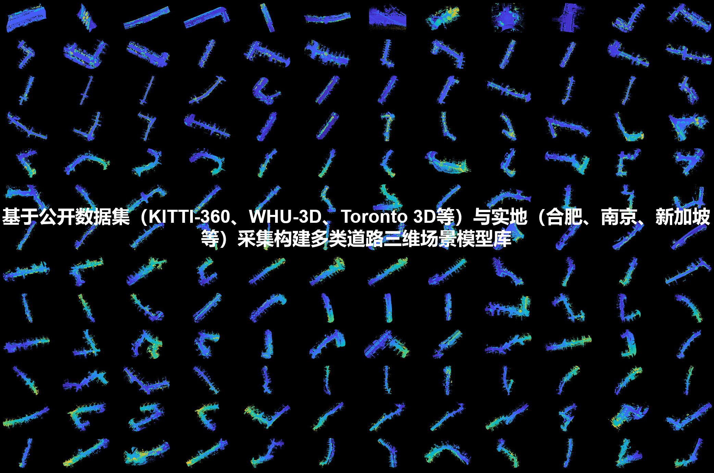

数据集简介
Introduction
CRSLP Dataset 是第一个面向路侧协同 LiDAR 优化布设方法测试的大规模虚实融合数据集，
包含 13 个地点，超 100 个交通场景，
超过 900 组布设方案 及对应的 IoU 序列数据，
并提供部分场景的连续点云数据序列与 GT-BBox 标注，
旨在推动路侧协同感知设备优化布设领域的相关研究。
同时，我们还提供了点云可视化与生成工具
LidarSIM ——
在提供道路环境三维场景数据与轨迹数据的基础上，可开展多 LiDAR 感知仿真与评价。
CRSLP Dataset is the first large-scale virtual-real fusion dataset for
benchmarking Cooperative Roadside LiDAR (CRSL) placement optimization.
It covers 13 real-world sites, over
100 traffic scenarios, and more than
900 placement plans with corresponding IoU time-series.
Selected scenarios also provide continuous point-cloud sequences and
GT-BBox annotations. CRSLP aims to advance research on roadside
cooperative-perception deployment.
We also release LidarSIM,
a point-cloud visualization and generation tool that performs multi-LiDAR
simulation and evaluation given 3D environment meshes and trajectory data.
主要特点
Main Features
（点击查看大图 / 播放视频）
(click any card to view full media)

多地点实景点云数据
Real-world point-cloud data at multi-sites

多配置方案 IoU 分布
IoU distribution across CRSL configs
CRSLP 工作流
CRSLP workflow
多场景仿真
Multi-scenario simulation

mIoU-替代指标相关性分析
Correlation between mIoU and surrogate metrics

多组替代指标对比
Surrogate metric benchmark